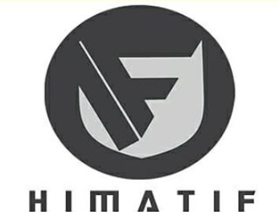

Visi
Menjadi program studi unggulan pada program pendidikan dan penelitian terapan di bidang pengembangan teknologi informasi yang
bertaraf nasional dan internasional pada tahun 2024.
Misi
- Menyelenggarakan pendidikan vokasi yang unggul untuk menghasilkan sumber daya manusia
yang profesional di bidang teknologi informasi dan komunikasi.
- Meningkatkan program penelitian terapan yang inovatif dan bertaraf nasional maupun internasional
di bidang teknologi informasi dan komunikasi.
- Meningkatkan program pengabdian masyarakat melalui kerjasama dengan berbagai institusi pemerintahan
dan industri di tingkat regional maupun nasional.
Himpunan

Program studi D3 Teknologi Informasi memiliki Himpunan bernama HIMATIF. Adapun visi misi Hmpunan tersebut antara lain :
VISI
Menjadikan Prodi D-III Teknik Informatika sebagai batu loncatan menuju masa depan teknologi informasi yang mengintegrasikan dunia pendidikan dengan kebutuhan usaha akan tenaga profesional informatika yang mampu bersaing secara global.
MISI
Menyelenggarakan pendidikan vokasional yang berorientasi pada students-oriented berbasis kompetensi yang dibutuhkan dunia kerja.
Menghasilkan dan membina sumber daya manusia industri teknologi informasi yang mempunyai sikap pemimpin, penuh kreativitas, berdisiplin tinggi, dan mampu memberikan solusi di bidang teknologi informasi dan menciptakan lingkungan pendidikan yang sehat dengan dukungan tenaga pengajar yang ahli dan profesional.
Menyelenggarakan penelitian terapan yang inovatif untuk menunjang pengembangan pendidikan dan pengabdian kepada masyarakat.
Mengabdikan keahlian dalam bidang teknologi informasi kepada masyarakat yang didukung dengan softskill yang baik untuk menciptakan lingkungan kerja yang kondusif.
Mendorong pengembangan kelembagaan program studi yang berorientasi pada mutu dan kompetensi berbasis internasional.
Tujuan
- Menghasilkan lulusan yang memiliki kemampuan dan keahlian untuk membangun aplikasi berskala besar dengan mengikuti seluruh fase pembangunan perangkat lunak dengan benar dan membuat dokumentasi lengkap dari proses pengembangan perangkat lunak serta memiliki kemampuan dalam proses pengujian dan
pemeliharaan perangkat lunak serta memiliki keinginan untuk selalu mengembangkan diri dan meningkatkan keterampilan dan pengetahuan di bidang Teknik Informatika.
- Menciptakan dan menyelenggarakan iklim akademik yang kondusif dengan selalu menerapkan prosedur operasi standar.
- Meningkatkan manajemen pendidikan dan kompetensi dosen dan pegawai secara profesional.
- Memberikan kesempatan kepada anak desa yang kurang mampu secara ekonomi dan memiliki kemampuan akademik untuk mengejar cita-citanya di bidang teknologi informatika.
Kompetensi Lulusan
- Menjadi pekerja profesional di bidang Teknik Informatika yang beriman dan bertaqwa kepada Tuhan Yang Maha Esa serta menghormati orang lain untuk menjalankan ibadah agamanya masing-masing.
- Memiliki etos kerja yang tinggi, disiplin, jujur, kreatif, mandiri dan bertanggungjawab.
- Dapat berkolaborasi dan bersinergi dengan orang lain dalam melaksanakan pekerjaan secara bersama (tim work).
- Menjunjung tinggi nama almamater dan profesi serta aktif mengembangkan diri sesuai dengan tuntutan profesinya.